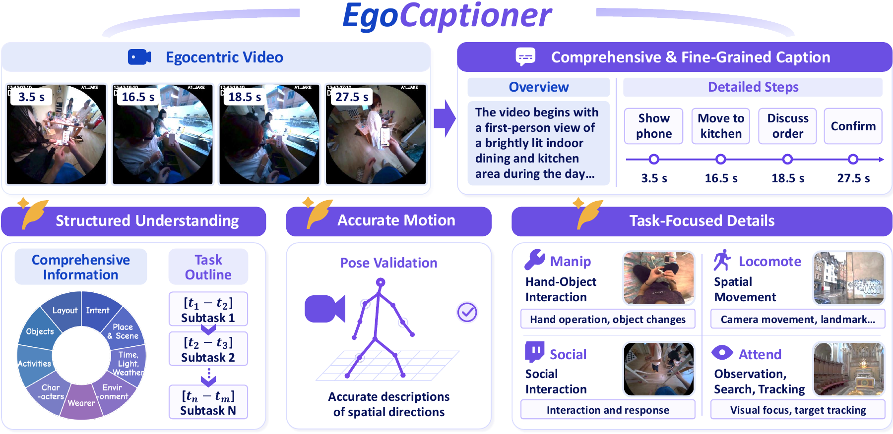
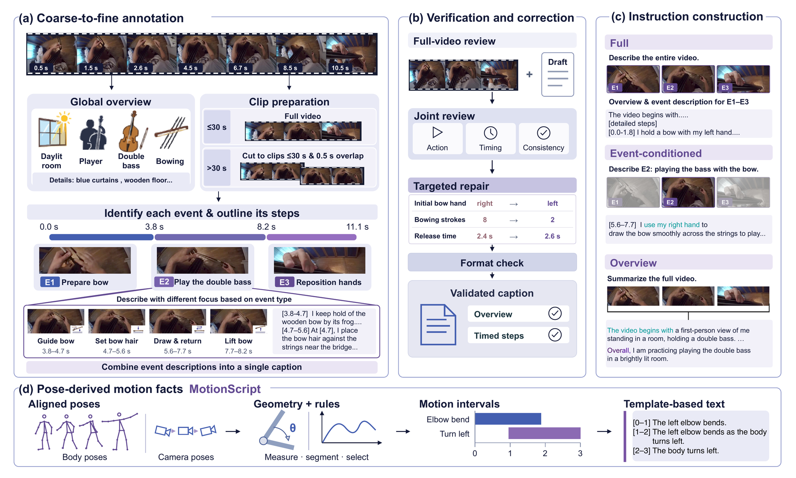
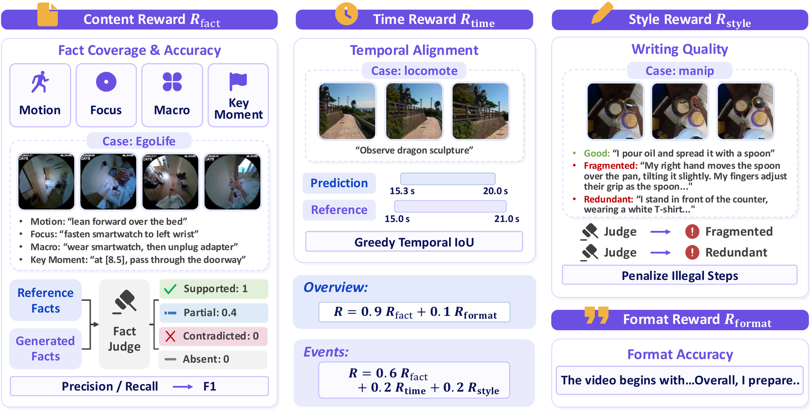

Example Captions
Pick a task type, play the video, and select a step to jump to that moment.
Question
Overview
Detailed Steps
Abstract
Egocentric video captioning requires fine-grained detail and accurate timing, yet current multimodal large language models (MLLMs) often miss brief actions, confuse their order, or misinterpret the wearer’s motion. Existing caption formats also offer limited support for combining detailed narration with precise timing.
We present EgoCaptioner, which pairs a video-level overview of the setting, participants, and the wearer’s overall activity with timed steps whose narration adapts to varying perceptual demands and marks key moments at specific timestamps. We develop a coarse-to-fine annotation pipeline that establishes event structure before expanding step descriptions, yielding 50,000 training examples from eight egocentric video sources.
Complementary rewards assess factual accuracy and coverage, measure step-level temporal alignment, and penalize fragmented or redundant narration, guiding caption refinement through Group Relative Policy Optimization (GRPO). To improve the reliability of factual supervision, we supplement caption references with pose-derived motion facts when sensor data are available.
Across five egocentric benchmarks, EgoCaptioner achieves leading performance among evaluated open-source models in caption quality, caption-conditioned question answering, and temporal alignment. It also surpasses Gemini 3.1 Pro on PhysCapBench and all evaluated proprietary baselines on Minerva-Ego under the caption-to-QA protocol. Ablations support the complementary roles of factual and temporal rewards and show that coarse-to-fine annotation provides more effective supervision than single-pass annotation.
- 50,000training examples
- 8egocentric video sources
- 5evaluation benchmarks
What a Caption Covers


Method
Data Construction
Gemini 3.1 Pro and Seed 2.1 Pro annotate each video from a global overview to event outlines and then timestamped steps. The draft is reviewed against the full video and corrected. Body and camera poses are converted into timed motion facts.


Rewards for GRPO
Step-level captions combine fact, time, and style rewards. The fact reward is the F1 of judge-scored precision and recall over extracted facts. The time reward matches predicted and reference steps by temporal IoU. The style reward penalizes fragmented or redundant steps. Overview captions pair the content reward with a format reward.


Benchmark Results
Table 1. Caption quality, video understanding, and temporal alignment across five egocentric benchmarks.
Scroll horizontally to see all metrics.
| Model | EgoMe-Overview | EgoMe-Steps | EgoTempo | Minerva-Ego | EgoHome | PhysCapBench | ||||||
|---|---|---|---|---|---|---|---|---|---|---|---|---|
| B@4 | METEOR | R-L | CIDEr | METEOR | SODA-c | SODA-d | Acc | Score | Accopen | PSJ | Overall | |
| Proprietary MLLMs | ||||||||||||
| Gemini 3.1 Pro | 3.32 | 18.62 | 24.45 | 5.61 | 3.98 | 7.41 | 46.80 | 23.60 | 1.444 | 4.29 | 52.86 | 75.06 |
| Gemini 3.8 Flash | 2.62 | 19.27 | 22.12 | 0.79 | 6.26 | 10.34 | 48.31 | 41.20 | 2.310 | 7.14 | 71.09 | 82.77 |
| GPT-6-Astra | 1.28 | 16.12 | 15.95 | 0.00 | 5.91 | 6.25 | 43.12 | 52.60 | 2.842 | 15.71 | 79.42 | 84.87 |
| Open-source MLLMs and Captioners | ||||||||||||
| Qwen3-VL-8B-Instruct | 1.59 | 15.72 | 16.50 | 0.05 | 5.73 | 6.34 | 43.33 | 14.00 | 0.966 | 1.43 | 55.88 | 68.94 |
| Qwen3-VL-8B-Thinking | 1.73 | 15.93 | 18.18 | 0.45 | 4.68 | 5.48 | 38.05 | 17.20 | 1.100 | 1.43 | 54.02 | 68.98 |
| Qwen3.5-9B | 2.65 | 17.58 | 22.59 | 4.01 | 5.71 | 8.02 | 50.25 | 21.60 | 1.388 | 0.00 | 46.90 | 51.24 |
| Qwen3.8-27B | 1.37 | 15.71 | 14.82 | 0.02 | 7.24 | 7.09 | 45.67 | 30.80 | 1.842 | 11.43 | 69.28 | 69.55 |
| Molmo2-8B | 1.20 | 14.64 | 15.02 | 0.11 | 4.76 | 4.30 | 38.19 | 19.20 | 1.204 | 7.14 | 54.20 | 53.20 |
| Tarsier2-7B | 2.72 | 17.36 | 21.05 | 1.01 | 0.00 | 0.00 | 0.00 | 18.00 | 1.212 | 2.86 | 0.00 | 62.92 |
| CapRL-Video-4B | 1.34 | 14.23 | 12.50 | 0.00 | 4.10 | 3.17 | 30.25 | 31.80 | 1.978 | 10.00 | 62.87 | 75.94 |
| TimeLens-8B | 1.59 | 15.35 | 16.23 | 0.10 | 6.37 | 7.10 | 46.93 | 17.80 | 1.124 | 1.43 | 60.15 | 60.25 |
| AVoCaDO | 1.14 | 13.53 | 12.64 | 0.00 | 0.00 | 0.00 | 0.00 | 13.60 | 0.918 | 4.29 | 0.00 | 60.84 |
| Egocentric MLLMs and Captioners | ||||||||||||
| EgoThinker† | 2.96 | 15.86 | 23.03 | 4.85 | 1.86 | 1.79 | 14.93 | 24.40 | 1.770 | 15.71 | 9.48 | 39.88 |
| EgoGPT | 2.01 | 14.17 | 19.98 | 2.50 | 0.00 | 0.00 | 0.00 | 9.20 | 0.690 | 0.00 | 0.00 | 32.92 |
| EgoCaptioner | 4.03 | 20.40 | 23.59 | 0.65 | 12.26 | 8.04 | 56.38 | 38.40 | 2.066 | 18.57 | 75.51 | 78.84 |
Higher is better for every metric. All scores are scaled by 100 except EgoTempo Score (0–5). B@4 denotes BLEU-4 and R-L denotes ROUGE-L. PhysCapBench Overall averages seven dimensions. † indicates direct video QA. Best and second-best mark rankings among open-source models.